Biological sequence analysis 10th
Ch.3 Markov chains and hidden Markov models
- The main aim of the chapter
- this chapter to questions about a single sequence → Hidden Markov model(HMM)
- 2 Main consideration
- Does this sequence belong to a particular family?
- assuming they are in same family, what can we say about its internal structure?
→ trying to identify alpha helix or beta sheet regions in a protein seq.
💡 Example: CpG islands
- general sequence에서 C-G base pair은 C가 methylation 되어 있음
→ High chance of this methyl-C mutating into a T
- The methylation process is suppressed in short stretches of the genome such as promoters or start regions → could see many more CpG di nts
⇒ ‘CpG island’
⇒ given seq.에서 어떻게 CpG 를 구분할 것인가?
⇒ 어떻게 어떤 short stretch 가 CpG island 인지 구분할 것인가?
⇒ Markov chains
Markov chains
We therefore want a model that generates sequences in which the probability of a symbol depends on the previous symbol.
- Description
- Markov chain graphically as a collection of ‘states’
(each of which corresponds to a particular residue, with arrows between the states)
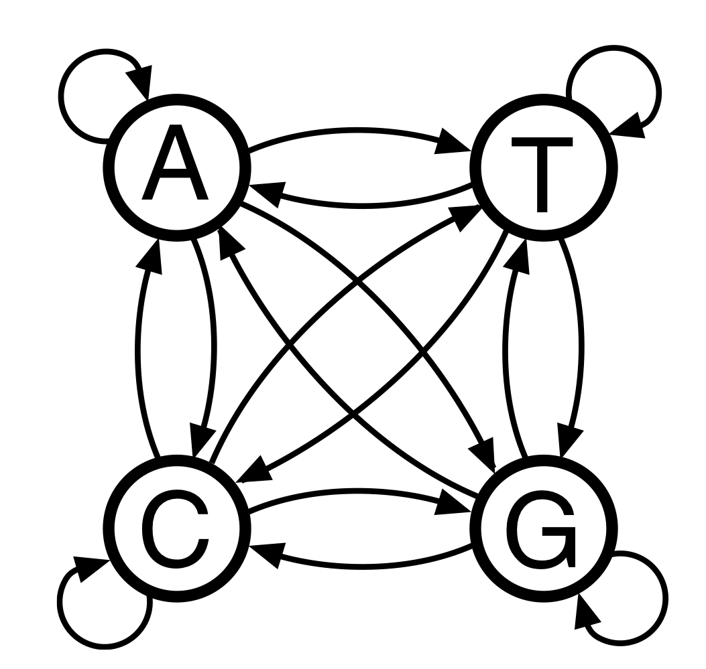
A Markov chain for DNA - A prob. parameter is associated with each arrow in the figure
- determines the prob. of a certain residue following another residue
(= 1 state following another state)
⇒ “transition probabilities”
⇒ According to this, the prob. of the sequence would be
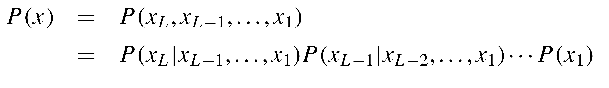
- determines the prob. of a certain residue following another residue
- A prob. parameter is associated with each arrow in the figure
- Markov chain graphically as a collection of ‘states’
Exercise
증명해보기
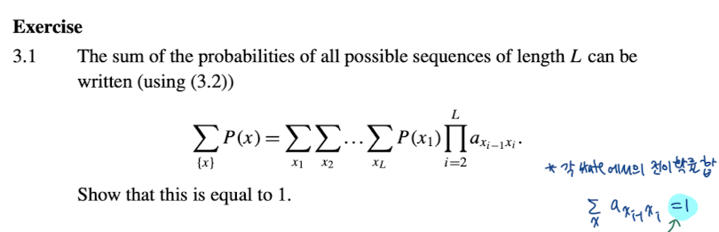
Example. CpG island
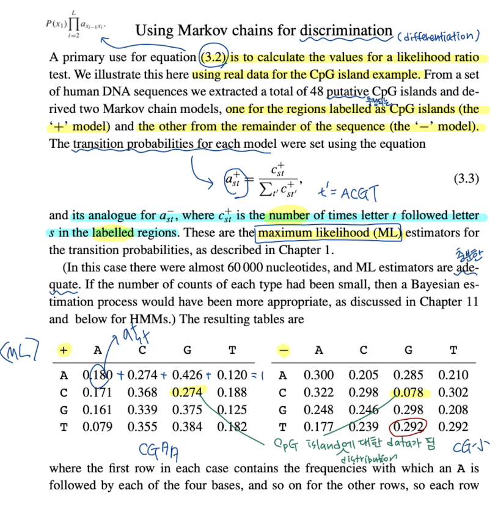
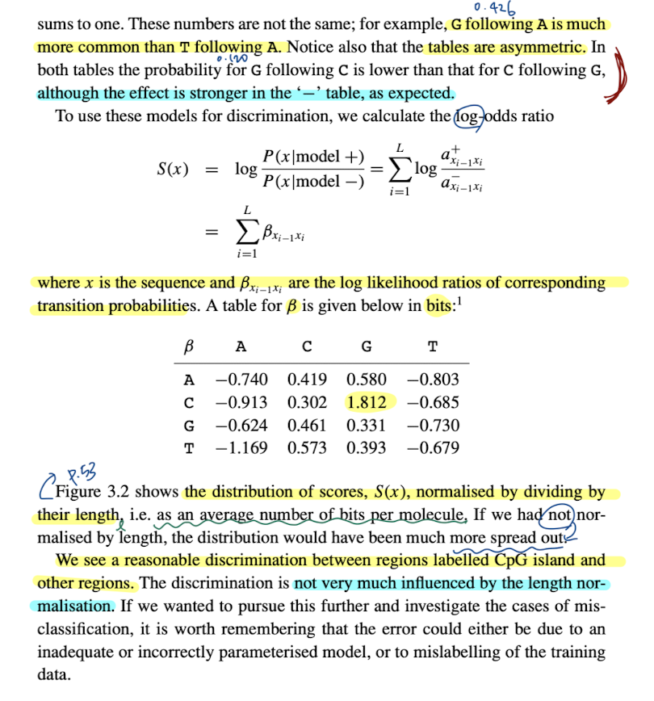
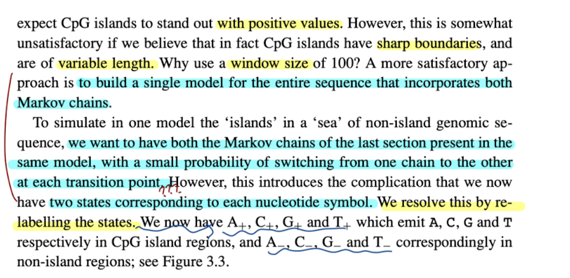
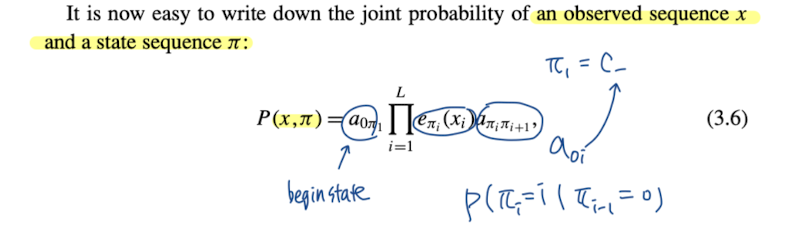
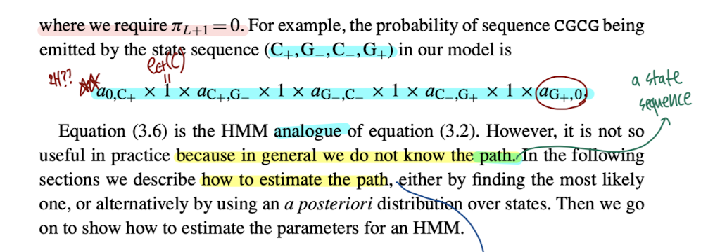
Ch.4 Pairwise alignment using HMMs
1. Pair HMMs
probability
- Emission → symbols from the states
- M → emission probability distribution for emitting an aligned pair a:b ⇒ \(p_ab\)
- X → emission probability distribution for emitting symbol a against a gap ⇒ \(q_a\)
- Y → emission probability distribution for emitting symbol a against a gap ⇒ \(q_b\)
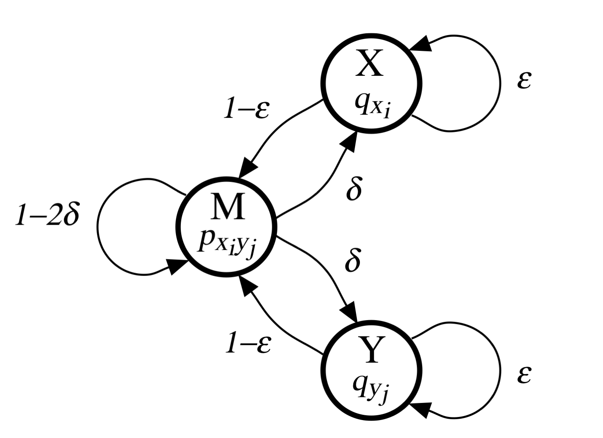
- Transition → between states
(⭐️ 하나의 state에서 나오는 모든 transition prob.의 합은 1)
- ẟ(delta) → M에서 (X,Y)로 이동하는 transition probabilty
⇒ Probability for 1st gap
- 𝜺(epsilon) → insert state(X,Y)에 머무는 transition probability
⇒ Probability for extending gap
- ẟ(delta) → M에서 (X,Y)로 이동하는 transition probabilty
- Begin/End state
- Begin state는 M state 와 동일 (M에서 시작한다라고 생각해도 무방)
- End state로 향하는 transition prob.는 M,X,Y 모두 동일하다고 가정 → 𝜏(tau)
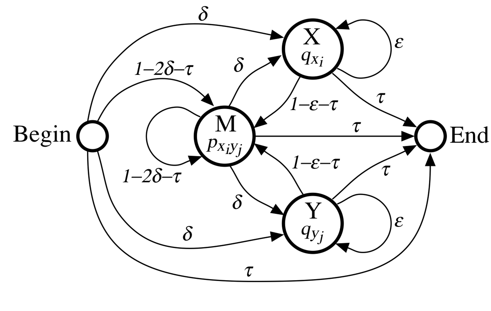
Algorithm: Viterbi algorithm for pair HMMs
- \(v^⋅(i, j)\) : probability values
- \(V^⋅ (i, j)\) : Log - odds scores
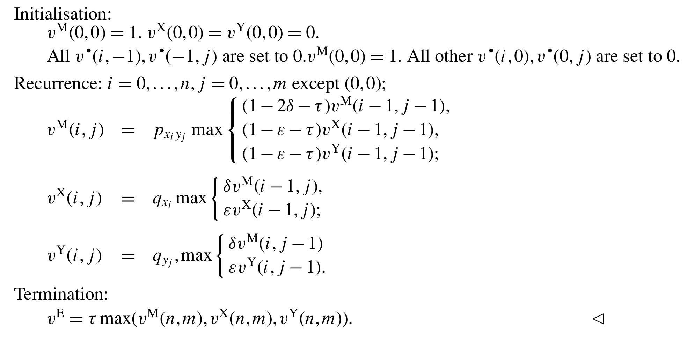
- Pointer와 Trace back은 기존 alignment algorithm과 동일
2. The full probability of x and y, summing over all paths
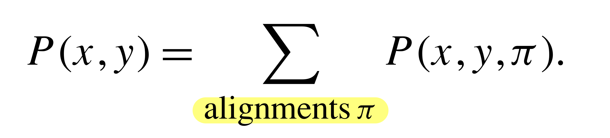
Algorithm: Forward calculation for pair HMMs
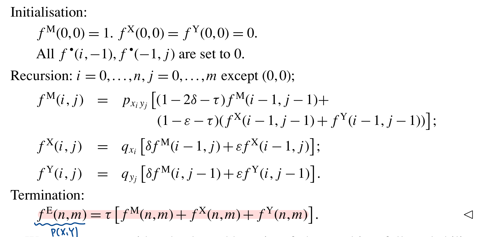
- \(f^k(i,j)\) : combined probability of all alignments up to (i,j)
- \(P(x,y)\) =\( f^E(n,m)\) → the full probability
⇒ Posterior distribution ⇒ P(𝜋|x,y)
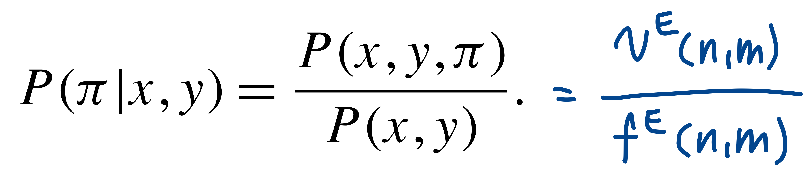
- The probability that the optimal scoring alignment is ‘correct’
4.4 The posterior probability that \(x_i\) is aligned to \(y_j\)
→ to calculate the local accuracy of an alignment
- \(x_i \)◇ \(y_j\) = \(x_i \) is aligned to \(y_j\)
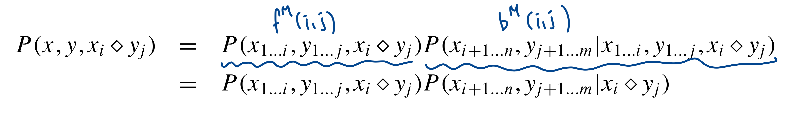
Algorithm: Backward calculation for pair HMMs
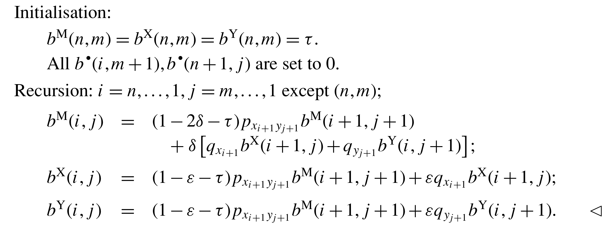
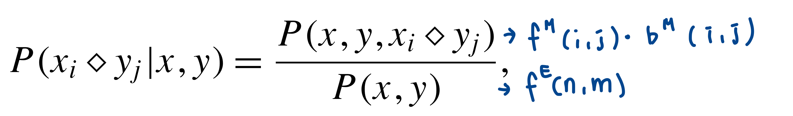
- The overall accuracy of 𝜋
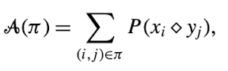
- Dynamic programming using score values given by the posterior probabilities of pair matches, without gap costs
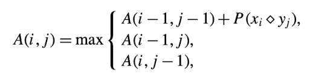
Recursion equations
Pair HMM Algorithm
pairwise alignment를 위해 Hidden Markov model 이용
- Viterbi Algorithm
- Posterior Algorithm
Parameter 설정
Argument
- file 형식의 2개 sequence ⇒ f_path1 f_path2
- algorithm mode ⇒ Viterbi -v or Posterior
Structure
- def 로 viterbi algorithm , posterior(forward,backward, decoding) algorithm
- Initialization, Recursion, Trace-back
- argument mode에 따라 if -v → Viterbi, if -p ⇒ posteior
- 최종 출력 = alignment, probability of alignment